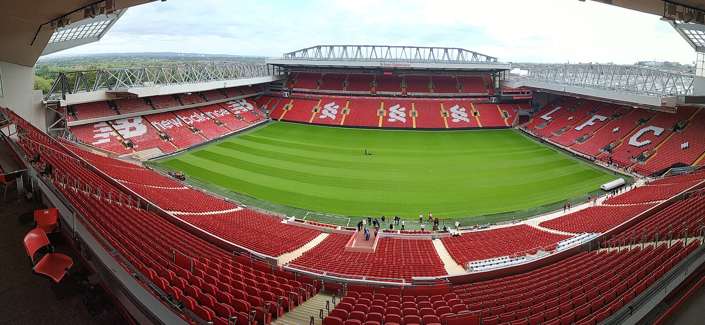
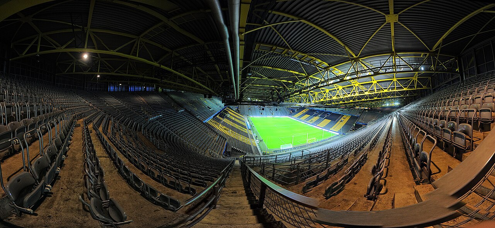

THE BEAUTIFUL GAME. THE ICONIC GROUNDS.
有些热爱，
有自己的主场。

本期封面 · THE COVER↗ 英格兰 · 利物浦
THIS IS ANFIELD.
这里，是安菲尔德。
利物浦足球俱乐部 · 自 1892 年起的家
01 / 10 一座城市的红色心跳历史影像 · 2019
献给每一个，向往现场的你。
10 座传奇球场05 个足球国度向下探索 ↓
01 / THE COLLECTION
世界很大，主场很多。
那些在屏幕里见过无数次的地方，
值得你再靠近一点。
⌕
暂时没有找到这座主场
换个关键词，或去其他联赛看看。
还有 4 座主场，等你发现
02 / BEHIND THE STANDS
看台会说话，
你愿意听吗？
钢铁与混凝土之外，
是足球最动人的部分。

DORTMUND, GERMANY球迷文化 / FAN CULTURE
一面黄墙，
一座城的信仰。
比赛还没开始，南看台已先声夺人。在多特蒙德，黄黑色不只是球衣的颜色，也是这座城市共同的语言。
THE JOURNEY CONTINUES
下一站，你的主场。
总有一座球场，让你想亲自坐上看台。